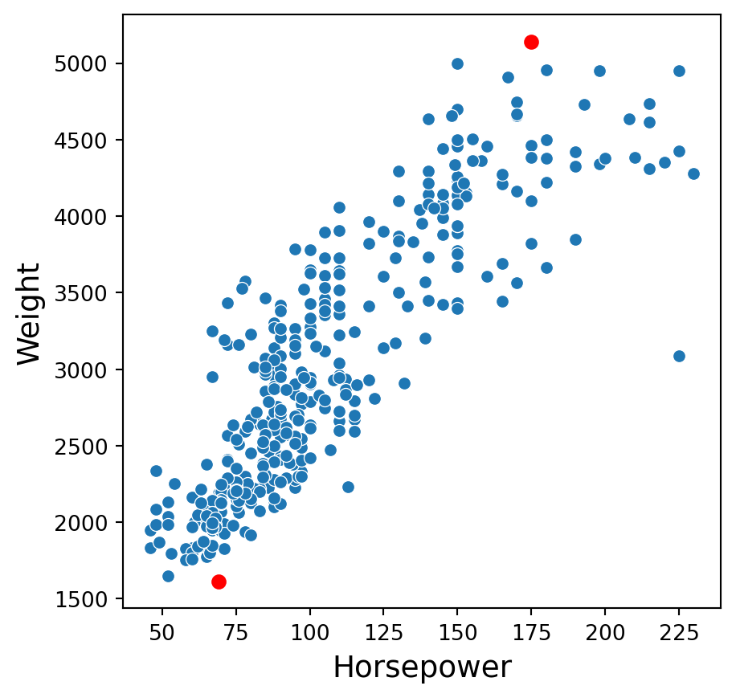
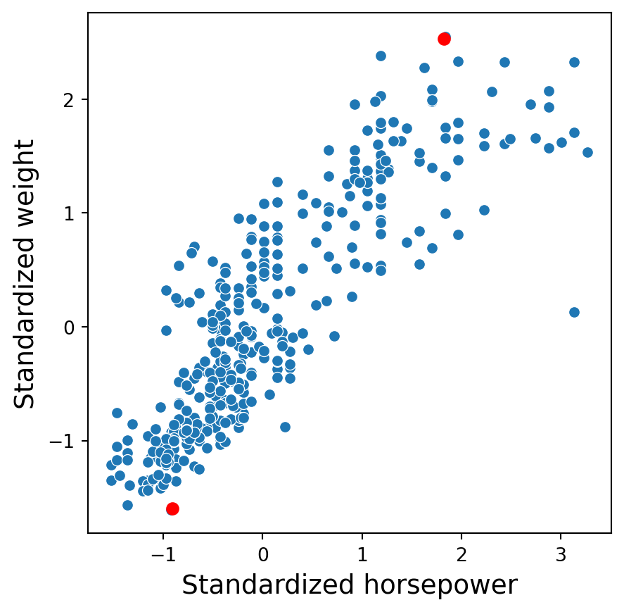
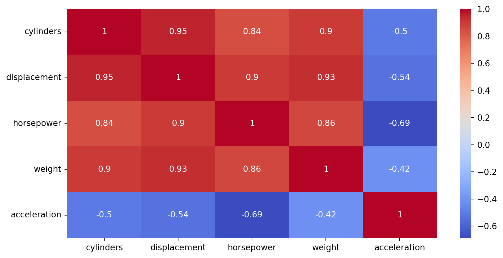
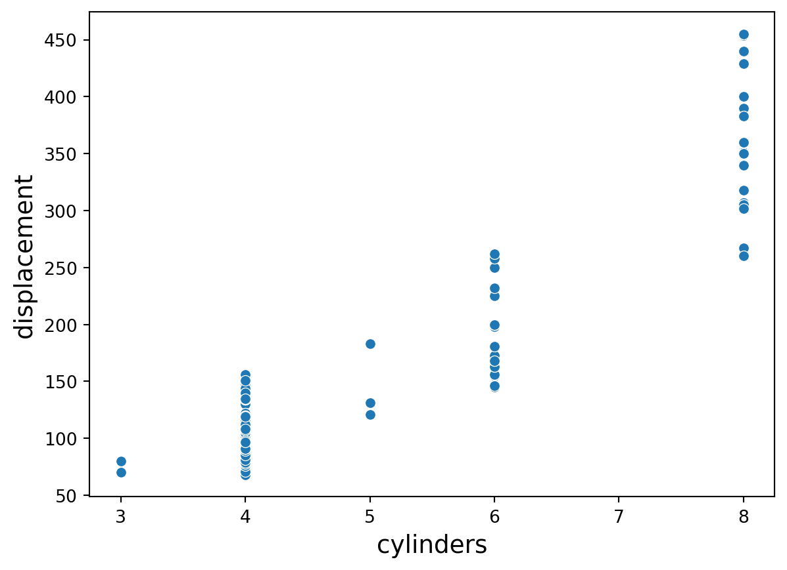

import pandas as pd
import matplotlib.pyplot as plt
import seaborn as sns
from sklearn.preprocessing import StandardScaler
from sklearn.feature_selection import VarianceThreshold
from sklearn.impute import SimpleImputerData preprocessing
IN1002B: Introduction to Data Science Projects
Agenda
- Introduction
- Dealing with missing values
- Standarization
- Transforming categorical predictors
- Filtering
Introduction
Data preprocessing
Data pre-processing techniques generally refer to the addition, deletion, or transformation of data.
It can make or break a model’s predictive ability.
For example, linear regression models (to be discussed later) are (relatively) insensitive to the characteristics of the predictor data, but K-nearest neighbors, principal component regression, and LASSO (to be discussed later) are not.
We will review some common strategies for removing predictors from the data, without considering how they might be related to the response.
In particular, we will review:
- Dealing with missing values.
- Standardization.
- Transforming categorical predictors.
- Filtering: Removing non-informative or correlated predictors.
scikit-learn library
- scikit-learn is a robust and popular library for machine learning in Python
- It provides simple, efficient tools for data mining and data analysis
- It is built on top of libraries such as NumPy, SciPy, and Matplotlib
- https://scikit-learn.org/stable/

Let’s import scikit-learn into python together with the other relevant libraries.
We will not use all the functions from the scikit-learn library. Instead, we will use specific functions from the sub-libraries preprocessing, feature_selection, and impute.
Dealing with missing values
Missing values
In many cases, some predictors have no values for a given observation. It is important to understand why the values are missing. There four main types of missing data:
Structurally missing data is data that is missing for a logical reason or because it should not exist.
Missing completely at random assumes that the fact that the data is missing is unrelated to the other information in the data.
Missing at random assumes that we can predict the value that is missing based on the other available data.
Missing not at random assumes that there is a mechanism that generates the missing values, which may include observed and unobserved predictors.
For large data sets, removal of samples based on missing values is not a problem, assuming that the type of missing data is completely at random.
In a smaller data sets, there is a steep price in removing samples. To overcome this issue, we can use methods of imputation, which tries to estimate values of the predictor variables based on the other predictor values and variables.
Here, we will introduce three simple methods for imputing missing values in categorical and numerical variables.
Example 1
Let’s use the penguins dataset available in the file penguins.xlsx.
# Load the Excel file into a pandas DataFrame.
penguins_data = pd.read_excel("penguins.xlsx")
# Set categorical variables.
penguins_data['sex'] = penguins_data['sex'].astype('category')
penguins_data['species'] = penguins_data['species'].astype('category')
penguins_data['island'] = penguins_data['island'].astype('category')The dataset has some missing values denoted as NaN.
| species | island | bill_length_mm | bill_depth_mm | flipper_length_mm | body_mass_g | sex | year | |
|---|---|---|---|---|---|---|---|---|
| 0 | Adelie | Torgersen | 39.1 | 18.7 | 181.0 | 3750.0 | male | 2007 |
| 1 | Adelie | Torgersen | 39.5 | 17.4 | 186.0 | 3800.0 | female | 2007 |
| 2 | Adelie | Torgersen | 40.3 | 18.0 | 195.0 | 3250.0 | female | 2007 |
| 3 | Adelie | Torgersen | NaN | NaN | NaN | NaN | NaN | 2007 |
| 4 | Adelie | Torgersen | 36.7 | 19.3 | 193.0 | 3450.0 | female | 2007 |
Removing missing values
If we want to remove all rows in the dataset that have at least one missing value, we use the function dropna().
complete_penguins = penguins_data.dropna()
complete_penguins.head()| species | island | bill_length_mm | bill_depth_mm | flipper_length_mm | body_mass_g | sex | year | |
|---|---|---|---|---|---|---|---|---|
| 0 | Adelie | Torgersen | 39.1 | 18.7 | 181.0 | 3750.0 | male | 2007 |
| 1 | Adelie | Torgersen | 39.5 | 17.4 | 186.0 | 3800.0 | female | 2007 |
| 2 | Adelie | Torgersen | 40.3 | 18.0 | 195.0 | 3250.0 | female | 2007 |
| 4 | Adelie | Torgersen | 36.7 | 19.3 | 193.0 | 3450.0 | female | 2007 |
| 5 | Adelie | Torgersen | 39.3 | 20.6 | 190.0 | 3650.0 | male | 2007 |
Imputation using the mean
We can impute the missing values of a numeric variable using the mean or median of its available values. For example, let’s consider the variable bill_length_mm, which has missing values.
penguins_data['bill_length_mm'].head()0 39.1
1 39.5
2 40.3
3 NaN
4 36.7
Name: bill_length_mm, dtype: float64In scikit-learn, we use the function SimpleImputer() to define the method of imputation of missing values.
Using SimpleImputer(), we set the method to imput missing values using the mean. We also use the function fit_transform() to apply the imputation method to the variable.
# Imputation for numerical variables (using the mean)
num_imputer = SimpleImputer(strategy='mean')
# Replace the original variable with new version.
penguins_data['bill_length_mm'] = num_imputer.fit_transform(penguins_data[ ['bill_length_mm'] ] )After imputation, the dataset looks like this.
penguins_data.head()| species | island | bill_length_mm | bill_depth_mm | flipper_length_mm | body_mass_g | sex | year | |
|---|---|---|---|---|---|---|---|---|
| 0 | Adelie | Torgersen | 39.10000 | 18.7 | 181.0 | 3750.0 | male | 2007 |
| 1 | Adelie | Torgersen | 39.50000 | 17.4 | 186.0 | 3800.0 | female | 2007 |
| 2 | Adelie | Torgersen | 40.30000 | 18.0 | 195.0 | 3250.0 | female | 2007 |
| 3 | Adelie | Torgersen | 43.92193 | NaN | NaN | NaN | NaN | 2007 |
| 4 | Adelie | Torgersen | 36.70000 | 19.3 | 193.0 | 3450.0 | female | 2007 |
Now, bill_length_mm has complete values.
To imput the missing values using the median, we simply set this method in SimpleImputer(). For example, let’s imput the missing values of bill_depth_mm.
# Imputation for numerical variables (using the mean)
num_imputer = SimpleImputer(strategy = 'median')
# Replace the original variable with new version.
penguins_data['bill_depth_mm'] = num_imputer.fit_transform(penguins_data[ ['bill_depth_mm'] ] )
# Show the first 4 rows of the updated dataset.
penguins_data.head(3)| species | island | bill_length_mm | bill_depth_mm | flipper_length_mm | body_mass_g | sex | year | |
|---|---|---|---|---|---|---|---|---|
| 0 | Adelie | Torgersen | 39.1 | 18.7 | 181.0 | 3750.0 | male | 2007 |
| 1 | Adelie | Torgersen | 39.5 | 17.4 | 186.0 | 3800.0 | female | 2007 |
| 2 | Adelie | Torgersen | 40.3 | 18.0 | 195.0 | 3250.0 | female | 2007 |
Using the mean or the median?
We use the sample mean when the data distribution is roughly symmetrical.
Pros: Simple and easy to implement.
Cons: Sensitive to outliers; may not be accurate for skewed distributions
We use the sample median when the data is skewed (e.g., incomes, prices).
Pros: Less sensitive to outliers; robust for skewed distributions.
Cons: May reduce variability in the data.
Imputation method for categorical variable
If a categorical variable has missing values, we can use the most frequent of the available values to replace the missing values. To this end, we use similar commands as before.
For example, let’s imput the missing values of sex using this strategy.
# Imputation for categorical variables (using the most frequent value)
cat_imputer = SimpleImputer(strategy = 'most_frequent')
# Apply imputation strategy for categorical variables.
penguins_data['sex'] = cat_imputer.fit_transform(penguins_data[ ['sex'] ]).ravel()Standarization
Predictors with different units
Many of the predictive models we will see later have issues with numeric predictors with different units:
Methods such as K-nearest neighbors are based on the distance between observations. If the predictors are on different units or scales, then some predictors will have a larger weight for computing the distance.
Other methods such as LASSO use the variances of the predictors in their calculations. Predictors with different scales will have different variances and so, those with a higher variance will play a bigger role in the calculations.
In a nutshell, some predictors will have a higher impact in the model due to its unit and not its information provided to it.
Standarization
Standardization refers to centering and scaling each numeric predictor individually. It puts every predictor on the same scale.
To center a predictor variable, the average predictor value is subtracted from all the values.
Therefore, the centered predictor has a zero mean (that is, its average value is zero).
To scale a predictor, each of its value is divided by its standard deviation.
Scaling the data coerce the values to have a common standard deviation of one.
In mathematical terms, we standardize a predictor as:
\[{\color{blue} \tilde{x}_{i}} = \frac{{ x_{i} - \bar{x}}}{ \sqrt{\frac{1}{n -1} \sum_{i=1}^{n} (x_{i} - \bar{x})^2}},\]
with \(\bar{x} = \sum_{i=1}^n \frac{x_i}{n}\).
Example 2
A market analyst is studying quality characteristics of cars. Specifically, the analyst is investigating the miles per gallon (mpg) of cars can be predicted using:
- \(X_1:\) cylinders. Number of cylinders between 4 and 8
- \(X_2:\) displacement. Engine displacement (cu. inches)
- \(X_3:\) horsepower. Engine horsepower
- \(X_4:\) weight. Vehicle weight (lbs.)
- \(X_5:\) acceleration. Time to accelerate from 0 to 60 mph (sec.)
- \(X_6:\) origin. Origin of car (American, European, Japanese)
The dataset is in the file “auto.xlsx”. Let’s read the data using numpy.
# Load the Excel file into a pandas DataFrame.
auto_data = pd.read_excel("auto.xlsx")
# Set categorical variables.
auto_data['origin'] = auto_data['origin'].astype('category')| observation | mpg | cylinders | displacement | horsepower | weight | acceleration | year | origin | name | |
|---|---|---|---|---|---|---|---|---|---|---|
| 0 | 1 | 18.0 | 8 | 307.0 | 130 | 3504 | 12.0 | 70 | American | chevrolet chevelle malibu |
| 1 | 2 | 15.0 | 8 | 350.0 | 165 | 3693 | 11.5 | 70 | American | buick skylark 320 |
| 2 | 3 | 18.0 | 8 | 318.0 | 150 | 3436 | 11.0 | 70 | American | plymouth satellite |
| 3 | 4 | 16.0 | 8 | 304.0 | 150 | 3433 | 12.0 | 70 | American | amc rebel sst |
Dealing with missing values
The dataset has missing values. In this example, we remove each row with at least one missing value. We also concentrate on the five numerical predictors in the dataset.
# Select specific variables.
sb_Auto = auto_data[['cylinders', 'displacement',
'horsepower', 'weight',
'acceleration']]
# Remove rows with missing values.
complete_sbAuto = sb_Auto.dropna()Two predictors in original units
Consider two points in the plot: \((175, 1613)\) and \((69, 1613)\).

The distance between these points is \(\sqrt{(69 - 175)^2 + (1613-5140)^2}\) \(= \sqrt{11236 + 12439729}\) \(= 3528.592\).
Standarization in python
To standardize numerical predictors, we use the function StandardScaler(). Moreover, we apply the function to the variables using the function fit_transform().
scaler = StandardScaler()
Xs = scaler.fit_transform(complete_sbAuto)Unfortunately, the resulting object is not a pandas data frame. We then convert this object to this format.
scaled_df = pd.DataFrame(Xs, columns = complete_sbAuto.columns)
scaled_df.head()| cylinders | displacement | horsepower | weight | acceleration | |
|---|---|---|---|---|---|
| 0 | 1.483947 | 1.077290 | 0.664133 | 0.620540 | -1.285258 |
| 1 | 1.483947 | 1.488732 | 1.574594 | 0.843334 | -1.466724 |
| 2 | 1.483947 | 1.182542 | 1.184397 | 0.540382 | -1.648189 |
| 3 | 1.483947 | 1.048584 | 1.184397 | 0.536845 | -1.285258 |
| 4 | 1.483947 | 1.029447 | 0.924265 | 0.555706 | -1.829655 |
Two predictors in standardized units
In the new scale, the two points are now: \((1.82, 2.53)\) and \((-0.91, -1.60)\).

The distance between these points is \(\sqrt{(-0.91 - 1.82)^2 + (-1.60-2.53)^2}\) \(= \sqrt{7.45 + 17.05} = 4.95\).
Discussion
Centering and scaling predictors are generally used to improve the numerical stability of some calculations.
It is generally recommended to always standardize the numeric predictors. Perhaps the only exception would be if we consider a linear regression model.
A drawback of these transformations is the loss of interpretability since the data are no longer in the original units.
Transforming categorical predictors
Categorical predictors
A categorical predictor takes on values that are nominal categories.
For example:
Type of school: Public or private.
Treatment: New or placebo.
Grade: Passed or not passed.
The categories can be represented by names, labels or even numbers. Their use in regression requires dummy variables, which are numeric variables.
Dummy variables
The traditional choice for a dummy variable is a binary variable, which can only take the values 0 and 1.
Initially, a categorical variable with \(k\) categories requires \(k\) dummy variables.
Example
Categorical predictor: Origin of a car. Three categories: American, European and Japanese.
Initially, 3 dummy variables are required:
\[d_1 = \begin{cases} 1 \text{ if observation is from an American car}\\ 0 \text{ otherwise} \end{cases}\] \[d_2 = \begin{cases} 1 \text{ if observation is from an European car}\\ 0 \text{ otherwise} \end{cases}\] \[d_3 = \begin{cases} 1 \text{ if observation is from a Japanese car}\\ 0 \text{ otherwise} \end{cases}\]
The variable Origin would then be replaced by the three dummy variables
| Origin (\(X\)) | \(d_1\) | \(d_2\) | \(d_3\) |
|---|---|---|---|
| American | 1 | 0 | 0 |
| American | 1 | 0 | 0 |
| European | 0 | 1 | 0 |
| European | 0 | 1 | 0 |
| American | 1 | 0 | 0 |
| Japanese | 0 | 0 | 1 |
| \(\vdots\) | \(\vdots\) | \(\vdots\) | \(\vdots\) |
A drawback
A drawback with the initial dummy variables is that they are linearly dependent. That is, \(d_1 + d_2 + d_3 = 1\).
Therefore, we can determine the value of \(d_1 = 1- d_2 - d_3.\)
Predictive models such as linear regression are sensitive to linear dependencies among predictors.
The solution is to drop one of the predictor, say, \(d_1\), from the data.
The variable Origin would then be replaced by the three dummy variables
| Origin (\(X\)) | \(d_2\) | \(d_3\) |
|---|---|---|
| American | 0 | 0 |
| American | 0 | 0 |
| European | 1 | 0 |
| European | 1 | 0 |
| American | 0 | 0 |
| Japanese | 0 | 1 |
| \(\vdots\) | \(\vdots\) | \(\vdots\) |
Dummy variables in python
We can get the dummy variables of a categorical variable using the function pd.get_dummies() from pandas.
The input of the function is the categorical variable.
The function has an extra argument called drop_first to drop the first dummy variable. It also has the argument dtype to show the values as integers.
dummy_data = pd.get_dummies(auto_data['origin'], drop_first = True,
dtype = 'int')dummy_data.head()| European | Japanese | |
|---|---|---|
| 0 | 0 | 0 |
| 1 | 0 | 0 |
| 2 | 0 | 0 |
| 3 | 0 | 0 |
| 4 | 0 | 0 |
Filtering
Removing predictors
There are potential advantages to removing predictors prior to modeling:
Fewer predictors means decreased computational time and complexity.
If two predictors are highly-correlated, they are measuring the same underlying information. So, removing one should not compromise the performance of the model.
Here, we will see two techniques to remove predictors.
Near-Zero variance predictors
A near-zero variance predictor variable is one that has only a handful of unique values that occur with very low frequencies.
If the predictor has a single unique value, then it is called a zero-variance predictor variable.
Since the values of this predictor variable do not vary or change at all, this predictor does not provide any information to the model and must be discarded.
Example 3
We consider a data set related to Glass identification. The data has 214 glass samples labeled as one of seven glass categories. There are nine predictors including the refractive index (RI) and percentages of eight elements: Na, Mg, Al, Si, K, Ca, Ba, and Fe.
Let’s read the data set. Note that this is a modified version of the original data.
# Load Excel file (make sure the file is in your Colab)
glass_data = pd.read_excel('glass.xlsx')
# Drop the categorical variable.
sb_glass = glass_data.drop(columns=['Type'])In python
We use the function VarianceThreshold() to set the threshold for determining a low sample variance. We also use other functions such as selector.fit() and selector.get_support().
# Set threshold
selector = VarianceThreshold(threshold=0.01)
# Apply threshold.
selector.fit(sb_glass)
# Identify predictors with low variance.
low_variance_cols = sb_glass.columns[~selector.get_support()]
# Print the list of predictors.
print(f"Low variance columns: {low_variance_cols}")Low variance columns: Index(['RI', 'Fe'], dtype='object')After identifying predictors with low variability, we remove them from the problem because they do not add much to the problem. To this end, we use the command below.
# Removing problematic predictors
sb_reduced_glass = sb_glass.drop(columns=low_variance_cols)Between-predictor correlation
Collinearity is the technical term for the situation where two predictors have a substantial correlation with each other.
If two or more predictors are highly correlated (either negatively or positively), then methods such as the linear regression model will not work!
To visualize the severity of collinearity between predictors, we calculate and visualize the correlation matrix.
Correlation matrix
In python, we calculate the correlation matrix using the command below.
correlation_matrix = complete_sbAuto.corr()
print(correlation_matrix) cylinders displacement horsepower weight acceleration
cylinders 1.000000 0.950823 0.842983 0.897527 -0.504683
displacement 0.950823 1.000000 0.897257 0.932994 -0.543800
horsepower 0.842983 0.897257 1.000000 0.864538 -0.689196
weight 0.897527 0.932994 0.864538 1.000000 -0.416839
acceleration -0.504683 -0.543800 -0.689196 -0.416839 1.000000Next, we plot the correlation matrix using the function heatmap() from seaborn. The argument annot shows the actual value of the pair-wise correlations, and cmap shows a nice color theme.
plt.figure(figsize=(3,3))
sns.heatmap(correlation_matrix, cmap='coolwarm', annot = True)
The predictors cylinders and displacement are highly correlated. In fact, their correlation is 0.95.

In practice
We deal with collinearity by removing the minimum number of predictors to ensure that all pairwise correlations are below a certain threshold, say, 0.75.
We can identify the variables that are highly correlated using quite complex code. However, here we will do it manually using the correlation map.
# Dataset without highly correlated predictors.
reduced_auto = complete_sbAuto[ ['weight', 'acceleration']]